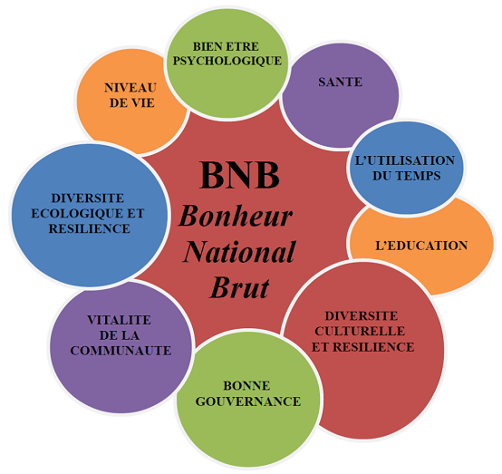
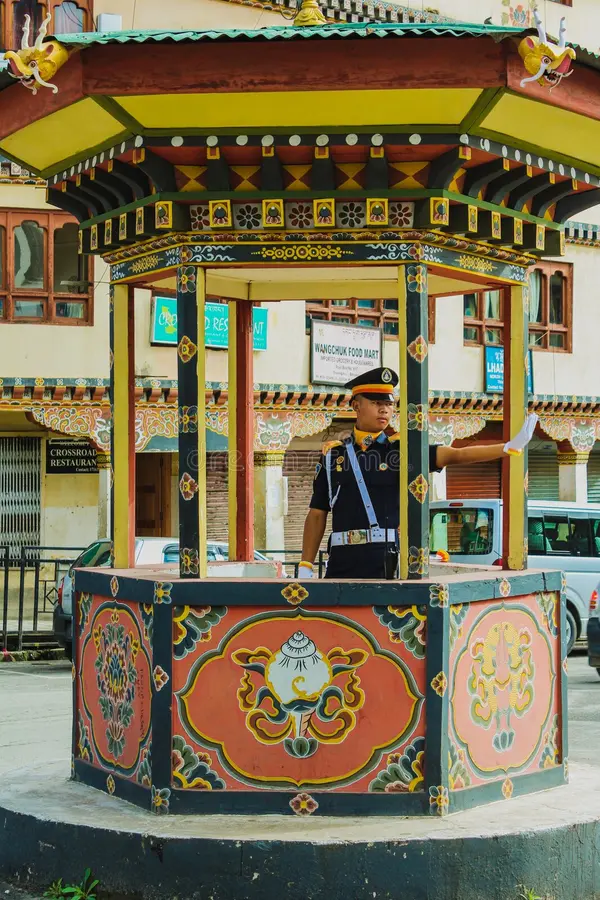
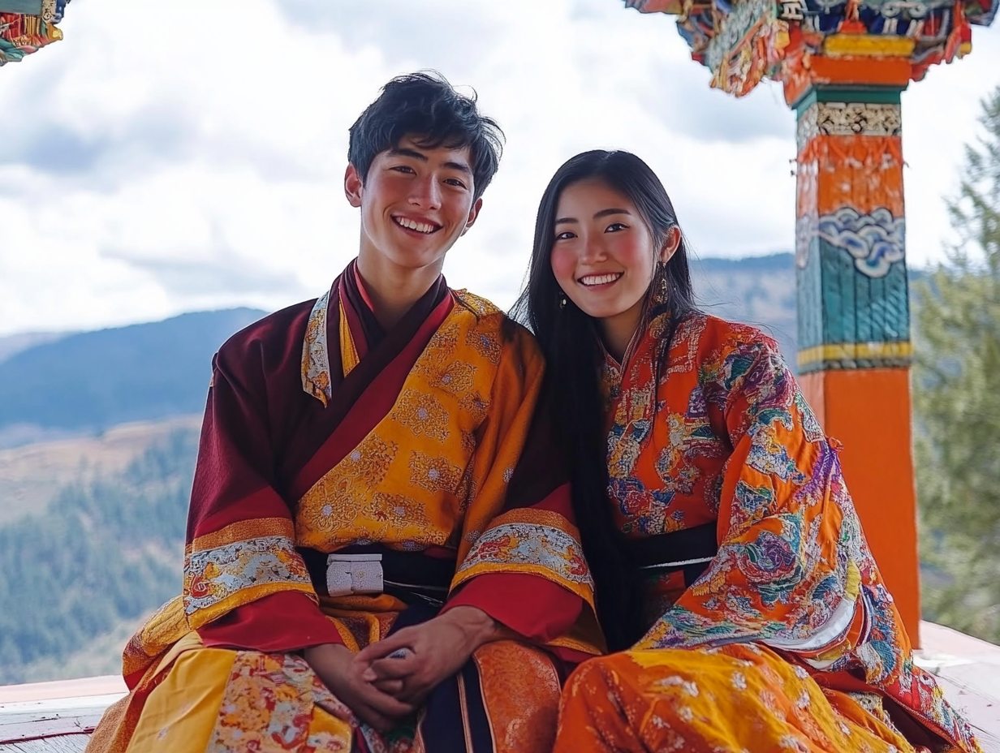
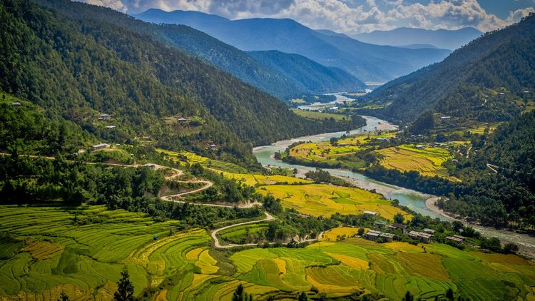
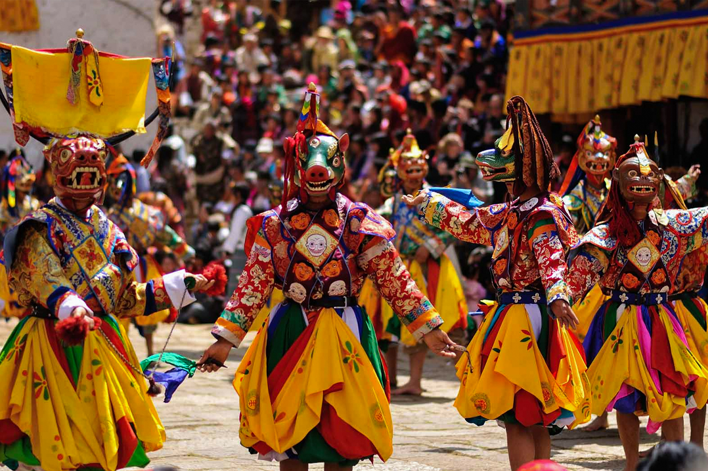
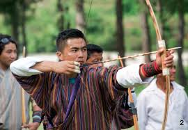

Fun Facts sur le Bhoutan 🇧🇹
1. Bonheur National Brut
Le Bhoutan privilégie le bonheur de ses citoyens plutôt que la croissance économique brute, avec un indicateur unique au monde : le Bonheur National Brut.
2. Pas de feux rouges à Thimphou
La capitale Thimphou n'a aucun feu de signalisation ! La circulation est dirigée à la main par des policiers aux gestes chorégraphiés.
3. Tenues traditionnelles quotidiennes
Le port du gho et de la kira, vêtements traditionnels, est obligatoire dans les lieux officiels et encouragé dans la vie quotidienne.
4. Un pays carbone négatif
Le Bhoutan est un modèle exceptionnel en matière d’écologie, car il absorbe plus de CO₂ qu’il n’en émet grâce à sa couverture forestière couvrant environ 70 % de son territoire, ce qui en fait un puits de carbone naturel majeur. Le pays a inscrit la protection de l’environnement dans sa constitution, exigeant que 60 % des terres restent forestières, et mise sur une énergie propre principalement hydraulique, limitant ainsi ses émissions. Son modèle de développement unique basé sur le Bonheur National Brut privilégie le bien-être humain et la préservation de la nature plutôt que la croissance économique à tout prix. En contrôlant strictement le tourisme et en protégeant une biodiversité riche à travers de nombreuses réserves, le Bhoutan démontre qu’il est possible de concilier développement durable et protection de l’environnement, offrant un exemple inspirant face aux enjeux climatiques mondiaux.
5. Festivals Tshechu et danses masquées
Chaque année, les Tshechus réunissent les habitants autour de danses masquées traditionnelles qui racontent des histoires spirituelles et renforcent les liens communautaires.
6. Le sport national du Bhoutan
Au Bhoutan, le tir à l’arc est le sport national et une tradition culturelle importante. Les compétitions, très festives, mêlent précision, chants et danses, rassemblant les communautés. Ce sport symbolise l’harmonie entre les Bhoutanais, leur culture et la nature.
🎵 Hymne National du Bhoutan
Écoutez l'hymne officiel du royaume :